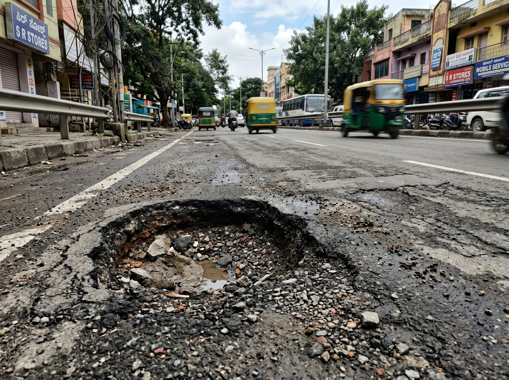

Report civic issues in seconds, get connected to the right department, and track what happens next from one trusted platform.
Citizens should not have to figure out government bureaucracy before they can report a problem.
Different departments often use separate portals, workflows, and contact channels.
Citizens may not know which department is responsible for a particular civic issue.
After submitting a complaint, citizens often lack a simple way to understand what happens next.
New Street brings grievance reporting, intelligent routing, tracking, and civic information into one location-aware experience.
Submit a photo, voice note, or text description of the issue.

Sahayak AI identifies the issue type, location, urgency, and relevant department.
The complaint is routed toward the appropriate government workflow.
Citizens can see status updates, timestamps, and progress.
Once the department updates the case, citizens can review the outcome and provide feedback.
Sahayak helps citizens understand government processes, classify civic issues, find relevant services, and navigate the right workflow.
Explore active civic issues and updates based on your selected city and locality. (Prototype Data)
Find relevant government services without searching across disconnected websites.
Find application requirements and access the relevant government workflow.
View ServiceApply for a new residential or commercial water and sewerage connection.
View ServiceNo more submitting a complaint into a black hole. New Street provides a visible trail from submission to resolution.
View Full Complaint DemoOnly collect information required for the requested service.
Show citizens exactly what is happening with their complaint.
Design for different languages, devices, and digital abilities.
Create a visible, unalterable trail from submission to resolution.
Report a problem, find the right service, and stay connected to what happens next.